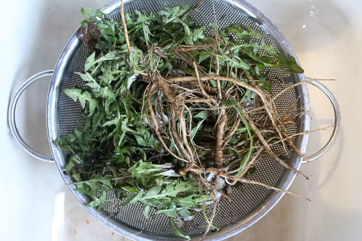

Dandelion roots don’t pull up easily from our hard clay soils. It took a trowel and later a full-on shovel to get these babies out intact. Look for dandelion rosettes popping out of the soil in the early spring, before they’ve gone to flower. Once the dandelions have gone to flower the roots will shrink and become bitter and woody as the plant sends energy up to the flower.
read moreCapers are a staple of our home cooking, and we eat them enough that I decided to learn how to grow them myself. I was disappointed to learn that they need a long growing season and lots of heat to thrive, so no luck in Vermont. Traditional capers are the pickled flower buds of a heat-loving Mediterranean shrub, but there are a number of other pickled flower buds that taste remarkably similar.
read moreDandelion tincture is a natural spring tonic that’s traditionally used to increase energy and cleanse the system after a long winter indoors. It’s often made as a simple dandelion root tincture, but you can also make a whole plant dandelion tincture to enjoy the benefits of every part of this medicinal wild weed.
read moreDandelion roots don’t pull up easily from our hard clay soils. It took a trowel and later a full-on shovel to get these babies out intact. Look for dandelion rosettes popping out of the soil in the early spring, before they’ve gone to flower. Once the dandelions have gone to flower the roots will shrink and become bitter and woody as the plant sends energy up to the flower.
If you’ve missed them in the early spring, you can always buy dried dandelion root online. That’ll save you a lot of time, as hunting down and digging up the dandelion roots took quite a while. I found it takes about 15 dandelion roots to make enough dry roasted dandelion root for a cup of coffee.
Once you have the roots, wash them thoroughly. Chop off the upper leaves and save those for a tasty dandelion salad later. I separated the smaller, scraggly parts of the roots out because they’ll just burn during roasting. The small root pieces are going right into a dandelion tincture, and these big hunks are ready for the oven.
